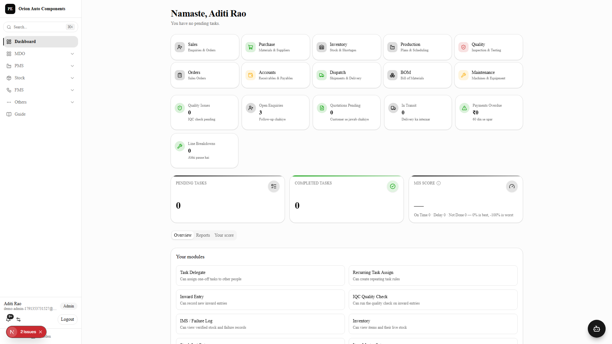

Now Live
Pro ERP Is Live.
A connected ERP for small & mid-size manufacturers — Lead to Cash, Purchase to Pay, no-code workflows, and real accounting. One system, one login.

Lead → Cash
No-Code FMS
Live Inventory
Double-Entry Accounts
WhatsApp Native